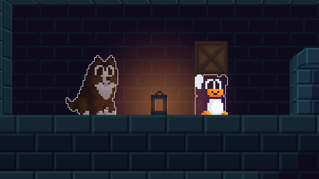
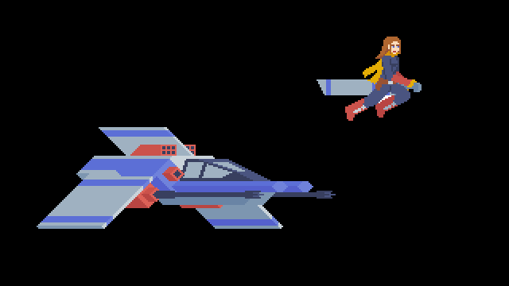
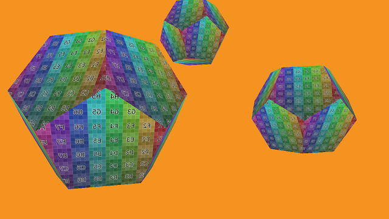
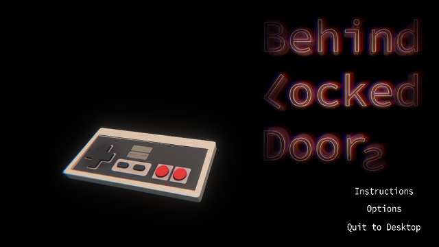
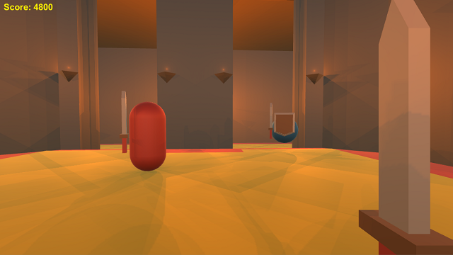

Portfolio
Penguin Game [WIP]
Long-term GameMaker project with a lot of interesting technical challenges. This project shows my problem solving skills. SFML/C++ 2D Shmup
Somewhat unfinished since we switched to use DirectX instead during the assignment, this project shows off my C++ knowledge. DirectX 11 "Game Engine" [WIP]
A work in progress, one assignment this year was to make a game using DX11. I'm trying for something a bit more ambitious! Behind Locked Doors
2nd year "game jam" style group project, made together with another programmer and 3 artists over the course of a week and a half. Year 1 Unity Assignment
My submission for an assignment to make a simple game. It's a bit clumsy to play, but I'm proud of the diversity of the enemies! 